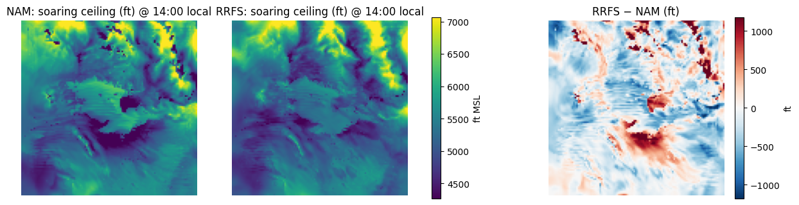
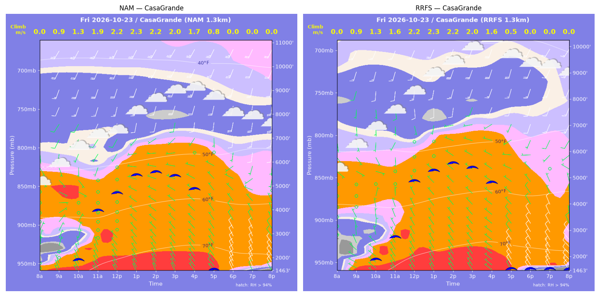
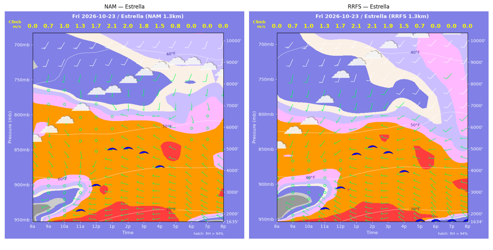
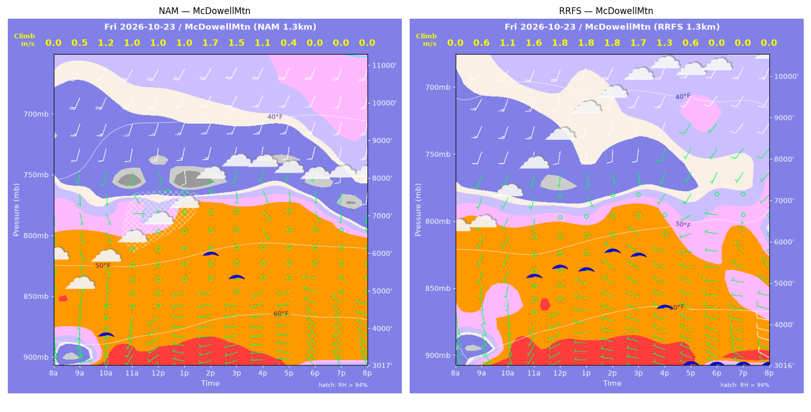
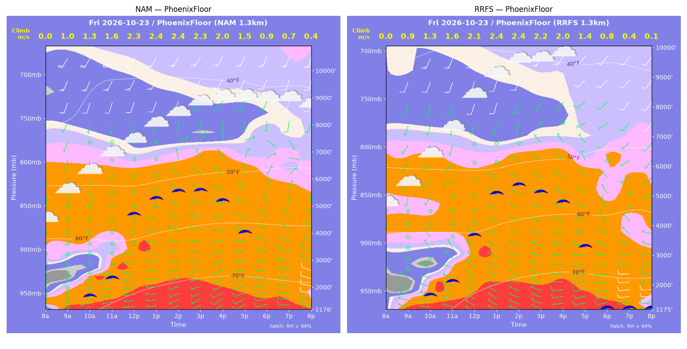
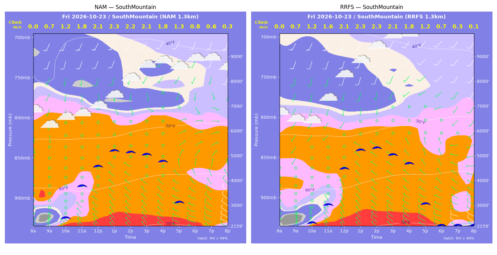
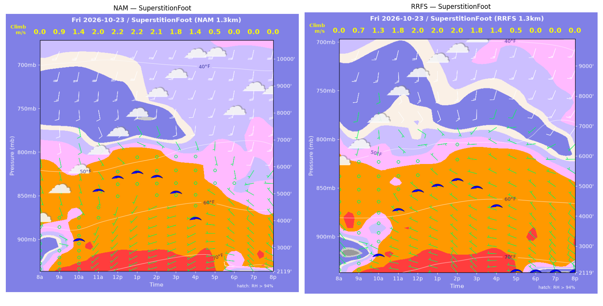
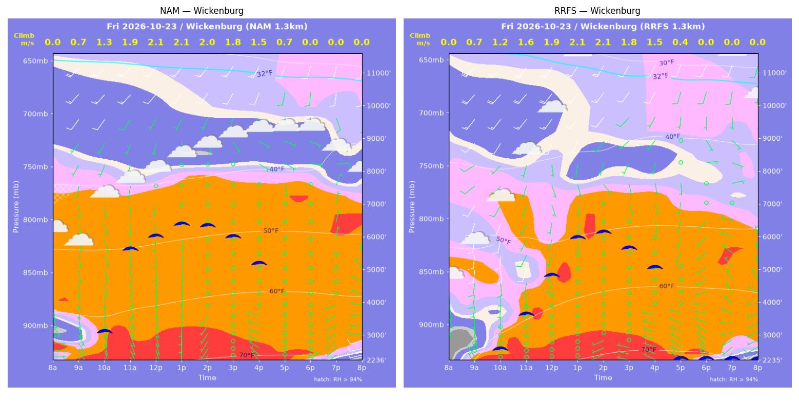

../runs/ab-phoenix-nam — model nam, cycle 2026-10-22 18z, dx 1.3333333740234374 km, 13 hours, grid 114×114../runs/ab-phoenix-rrfs — model rrfs, cycle 2026-10-22 18z, dx 1.3333333740234374 km, 13 hours, grid 114×114Grids identical; afternoon = 12:00–17:59 local (UTC-7). Δ = RRFS − NAM.
| Site | terrain ft | BL top (AGL) med|Δ| / bias (ft) | w* med|Δ| / bias (fpm) | Soaring ceiling med|Δ| / bias (ft) | BL wind speed med|Δ| / bias (kt) | BL wind dir med|Δ| / bias (deg) | 2 m temperature med|Δ| / bias (F) | Sfc LCL (AGL) med|Δ| / bias (ft) | Sensible heat flux med|Δ| / bias (W/m2) |
|---|---|---|---|---|---|---|---|---|---|
| PhoenixFloor | 1176 | 620 / -717 | 9 / -11 | 450 / -516 | 2 / +1 | 84 / -19 | 0 / +0 | 1009 / +981 | 13 / +12 |
| SouthMountain | 2160 | 131 / -48 | 7 / +4 | 95 / -35 | 1 / -0 | 47 / +15 | 0 / +0 | 1239 / +1251 | 17 / +12 |
| SuperstitionFoot | 2120 | 771 / -138 | 16 / -15 | 339 / -315 | 3 / -2 | 52 / -2 | 0 / -0 | 659 / +705 | 11 / -9 |
| Estrella | 1635 | 201 / -230 | 6 / +0 | 90 / -106 | 2 / +2 | 46 / +27 | 0 / +0 | 1201 / +1153 | 14 / +12 |
| Wickenburg | 2236 | 701 / -1330 | 11 / -11 | 299 / -402 | 2 / +2 | 71 / +55 | 1 / +0 | 3452 / +3355 | 26 / +22 |
| CasaGrande | 1463 | 125 / -316 | 5 / -10 | 83 / -44 | 2 / -1 | 12 / -1 | 0 / +0 | 948 / +945 | 6 / +2 |
| McDowellMtn | 3017 | 687 / -239 | 42 / +74 | 821 / +1018 | 2 / -1 | 15 / +7 | 1 / +1 | 1760 / +1712 | 45 / +66 |
| Metric | n | median |Δ| | p90 |Δ| | bias |
|---|---|---|---|---|
| BL top (AGL) (ft) | 42 | 357 | 1344 | -431 |
| w* (fpm) | 42 | 11 | 45 | +5 |
| Soaring ceiling (ft) | 42 | 201 | 1000 | -57 |
| BL wind speed (kt) | 42 | 2 | 4 | +0 |
| BL wind dir (deg) | 42 | 39 | 94 | +12 |
| 2 m temperature (F) | 42 | 0 | 1 | +0 |
| Sfc LCL (AGL) (ft) | 42 | 1201 | 2909 | +1443 |
| Sensible heat flux (W/m2) | 42 | 14 | 36 | +17 |
diffmap_tol.png| local | BL top NAM/RRFS ft | w* NAM/RRFS fpm | ceiling NAM/RRFS ft | BL wind NAM/RRFS | T2 NAM/RRFS F | HFX NAM/RRFS |
|---|---|---|---|---|---|---|
| 08:00 | 0 / 0 | 0 / 0 | 1176 / 1176 | 1kt@189 / 5kt@288 | 66 / 63 | 0 / 0 |
| 09:00 | 1203 / 833 | 189 / 181 | 1176 / 1176 | 0kt@282 / 6kt@286 | 69 / 66 | 87 / 109 |
| 10:00 | 1566 / 1439 | 249 / 255 | 1747 / 1732 | 0kt@279 / 4kt@297 | 71 / 69 | 154 / 177 |
| 11:00 | 2266 / 1918 | 315 / 306 | 2400 / 2181 | 1kt@233 / 3kt@332 | 73 / 72 | 215 / 233 |
| 12:00 | 5263 / 3890 | 444 / 408 | 4717 / 3693 | 1kt@086 / 2kt@292 | 75 / 75 | 260 / 273 |
| 13:00 | 5952 / 5619 | 470 / 473 | 5273 / 5054 | 2kt@116 / 1kt@210 | 77 / 77 | 273 / 296 |
| 14:00 | 6288 / 5974 | 472 / 476 | 5510 / 5307 | 2kt@079 / 4kt@191 | 78 / 78 | 262 / 283 |
| 15:00 | 6440 / 5781 | 449 / 441 | 5528 / 5056 | 3kt@033 / 3kt@320 | 78 / 78 | 220 / 234 |
| 16:00 | 6213 / 5633 | 398 / 386 | 5142 / 4715 | 3kt@001 / 6kt@321 | 79 / 79 | 159 / 161 |
| 17:00 | 5461 / 4422 | 300 / 279 | 3980 / 3227 | 5kt@016 / 7kt@322 | 78 / 78 | 78 / 77 |
| 18:00 | 2914 / 2149 | 181 / 151 | 1176 / 1176 | 5kt@300 / 7kt@282 | 77 / 77 | 32 / 25 |
| 19:00 | 2308 / 1056 | 135 / 83 | 1176 / 1176 | 8kt@294 / 9kt@268 | 76 / 76 | 17 / 8 |
| 20:00 | 661 / 212 | 73 / 27 | 1176 / 1176 | 11kt@276 / 8kt@267 | 75 / 75 | 9 / 1 |
| local | BL top NAM/RRFS ft | w* NAM/RRFS fpm | ceiling NAM/RRFS ft | BL wind NAM/RRFS | T2 NAM/RRFS F | HFX NAM/RRFS |
|---|---|---|---|---|---|---|
| 08:00 | 0 / 0 | 0 / 0 | 2160 / 2159 | 2kt@266 / 3kt@328 | 65 / 63 | 0 / 0 |
| 09:00 | 468 / 357 | 141 / 133 | 2160 / 2159 | 1kt@012 / 3kt@008 | 65 / 64 | 93 / 101 |
| 10:00 | 1307 / 925 | 241 / 229 | 2577 / 2367 | 1kt@203 / 2kt@344 | 67 / 65 | 164 / 199 |
| 11:00 | 2807 / 1728 | 359 / 314 | 3844 / 3088 | 1kt@123 / 1kt@354 | 68 / 68 | 254 / 275 |
| 12:00 | 3739 / 3582 | 417 / 419 | 4605 / 4506 | 1kt@143 / 2kt@236 | 70 / 70 | 300 / 317 |
| 13:00 | 4510 / 4477 | 451 / 458 | 5215 / 5211 | 4kt@151 / 3kt@186 | 71 / 71 | 316 / 333 |
| 14:00 | 4443 / 4602 | 437 / 452 | 5127 / 5279 | 2kt@149 / 4kt@178 | 72 / 72 | 291 / 312 |
| 15:00 | 4440 / 4335 | 407 / 413 | 5029 / 4982 | 2kt@126 / 1kt@182 | 72 / 73 | 236 / 254 |
| 16:00 | 4320 / 4130 | 358 / 357 | 4748 / 4631 | 2kt@109 / 1kt@024 | 73 / 73 | 165 / 172 |
| 17:00 | 2673 / 2711 | 247 / 240 | 3109 / 3017 | 5kt@025 / 4kt@347 | 72 / 72 | 88 / 79 |
| 18:00 | 1783 / 1363 | 165 / 131 | 2160 / 2159 | 6kt@319 / 6kt@296 | 71 / 71 | 39 / 26 |
| 19:00 | 1482 / 230 | 126 / 53 | 2160 / 2159 | 8kt@314 / 9kt@287 | 71 / 70 | 21 / 10 |
| 20:00 | 232 / 91 | 59 / 18 | 2160 / 2159 | 11kt@291 / 9kt@296 | 70 / 70 | 14 / 1 |
| local | BL top NAM/RRFS ft | w* NAM/RRFS fpm | ceiling NAM/RRFS ft | BL wind NAM/RRFS | T2 NAM/RRFS F | HFX NAM/RRFS |
|---|---|---|---|---|---|---|
| 08:00 | 0 / 0 | 0 / 0 | 2120 / 2119 | 2kt@103 / 1kt@270 | 64 / 64 | 0 / 0 |
| 09:00 | 1155 / 756 | 175 / 144 | 2120 / 2119 | 3kt@099 / 2kt@080 | 67 / 67 | 71 / 59 |
| 10:00 | 2576 / 1788 | 282 / 246 | 3336 / 2746 | 4kt@161 / 1kt@338 | 70 / 70 | 134 / 128 |
| 11:00 | 4762 / 3589 | 392 / 351 | 5138 / 4239 | 8kt@155 / 3kt@082 | 72 / 72 | 196 / 185 |
| 12:00 | 5265 / 4283 | 428 / 392 | 5604 / 4832 | 10kt@159 / 6kt@089 | 73 / 73 | 231 / 217 |
| 13:00 | 5460 / 4479 | 436 / 399 | 5763 / 4984 | 9kt@155 / 5kt@095 | 74 / 74 | 235 / 219 |
| 14:00 | 5333 / 4771 | 414 / 393 | 5594 / 5147 | 9kt@161 / 6kt@157 | 74 / 74 | 207 / 197 |
| 15:00 | 4815 / 4717 | 359 / 347 | 5008 / 4883 | 5kt@151 / 4kt@196 | 75 / 75 | 149 / 136 |
| 16:00 | 4240 / 4587 | 274 / 280 | 4034 / 4265 | 2kt@112 / 4kt@223 | 75 / 75 | 75 / 73 |
| 17:00 | 2901 / 4349 | 97 / 108 | 2120 / 2119 | 3kt@306 / 5kt@276 | 74 / 74 | 5 / 4 |
| 18:00 | 725 / 628 | 0 / 0 | 2120 / 2119 | 7kt@294 / 7kt@309 | 69 / 69 | -6 / -2 |
| 19:00 | 1045 / 555 | 0 / 0 | 2120 / 2119 | 7kt@311 / 8kt@322 | 68 / 68 | -4 / -7 |
| 20:00 | 529 / 613 | 0 / 0 | 2120 / 2119 | 5kt@297 / 9kt@307 | 67 / 67 | -2 / -7 |
| local | BL top NAM/RRFS ft | w* NAM/RRFS fpm | ceiling NAM/RRFS ft | BL wind NAM/RRFS | T2 NAM/RRFS F | HFX NAM/RRFS |
|---|---|---|---|---|---|---|
| 08:00 | 0 / 0 | 0 / 0 | 1635 / 1635 | 4kt@252 / 5kt@230 | 61 / 61 | 0 / 0 |
| 09:00 | 644 / 694 | 139 / 148 | 1635 / 1635 | 2kt@203 / 2kt@274 | 65 / 64 | 63 / 70 |
| 10:00 | 1015 / 996 | 200 / 206 | 1635 / 1635 | 1kt@252 / 1kt@054 | 67 / 66 | 120 / 134 |
| 11:00 | 1532 / 1557 | 255 / 266 | 2228 / 2299 | 0kt@208 / 1kt@039 | 69 / 69 | 165 / 185 |
| 12:00 | 3004 / 2771 | 337 / 337 | 3356 / 3222 | 2kt@178 / 2kt@235 | 72 / 72 | 195 / 213 |
| 13:00 | 5159 / 4792 | 410 / 408 | 4983 / 4735 | 3kt@150 / 4kt@211 | 73 / 73 | 206 / 219 |
| 14:00 | 5293 / 5263 | 395 / 410 | 5002 / 5049 | 3kt@168 / 5kt@192 | 74 / 74 | 179 / 203 |
| 15:00 | 5268 / 5124 | 360 / 368 | 4801 / 4762 | 3kt@172 / 5kt@255 | 75 / 75 | 136 / 151 |
| 16:00 | 5113 / 4674 | 290 / 286 | 4148 / 3886 | 3kt@263 / 6kt@235 | 75 / 75 | 73 / 77 |
| 17:00 | 4395 / 4226 | 152 / 136 | 1635 / 1635 | 3kt@273 / 6kt@238 | 74 / 74 | 12 / 9 |
| 18:00 | 389 / 419 | 0 / 0 | 1635 / 1635 | 4kt@301 / 5kt@318 | 71 / 70 | -0 / -1 |
| 19:00 | 84 / 84 | 0 / 0 | 1635 / 1635 | 3kt@321 / 2kt@358 | 69 / 69 | -1 / -1 |
| 20:00 | 264 / 84 | 0 / 0 | 1635 / 1635 | 5kt@287 / 2kt@354 | 68 / 68 | -0 / -0 |
| local | BL top NAM/RRFS ft | w* NAM/RRFS fpm | ceiling NAM/RRFS ft | BL wind NAM/RRFS | T2 NAM/RRFS F | HFX NAM/RRFS |
|---|---|---|---|---|---|---|
| 08:00 | 0 / 0 | 0 / 0 | 2236 / 2235 | 3kt@096 / 3kt@300 | 62 / 57 | 0 / 0 |
| 09:00 | 925 / 635 | 144 / 141 | 2236 / 2235 | 3kt@150 / 0kt@203 | 66 / 62 | 47 / 67 |
| 10:00 | 2500 / 1611 | 252 / 231 | 3174 / 2640 | 5kt@170 / 6kt@182 | 69 / 66 | 94 / 117 |
| 11:00 | 5550 / 2715 | 376 / 312 | 5668 / 3686 | 4kt@190 / 9kt@196 | 70 / 68 | 143 / 171 |
| 12:00 | 5889 / 4189 | 406 / 379 | 6036 / 4838 | 2kt@187 / 5kt@192 | 71 / 70 | 170 / 199 |
| 13:00 | 6361 / 5638 | 415 / 422 | 6389 / 5944 | 1kt@170 / 5kt@170 | 72 / 72 | 168 / 205 |
| 14:00 | 6377 / 5918 | 399 / 413 | 6314 / 6088 | 1kt@102 / 5kt@194 | 72 / 73 | 148 / 183 |
| 15:00 | 6245 / 5567 | 357 / 362 | 5969 / 5597 | 2kt@079 / 3kt@173 | 73 / 74 | 108 / 131 |
| 16:00 | 5985 / 5508 | 288 / 294 | 5153 / 4987 | 3kt@112 / 5kt@165 | 73 / 73 | 58 / 70 |
| 17:00 | 5735 / 1789 | 140 / 71 | 2236 / 2235 | 3kt@168 / 2kt@258 | 72 / 72 | 6 / 3 |
| 18:00 | 333 / 481 | 0 / 0 | 2236 / 2235 | 2kt@011 / 4kt@305 | 69 / 68 | -0 / -2 |
| 19:00 | 626 / 283 | 0 / 0 | 2236 / 2235 | 7kt@235 / 4kt@236 | 67 / 65 | -3 / -3 |
| 20:00 | 565 / 341 | 0 / 0 | 2236 / 2235 | 9kt@256 / 8kt@244 | 66 / 63 | -14 / -6 |
| local | BL top NAM/RRFS ft | w* NAM/RRFS fpm | ceiling NAM/RRFS ft | BL wind NAM/RRFS | T2 NAM/RRFS F | HFX NAM/RRFS |
|---|---|---|---|---|---|---|
| 08:00 | 0 / 0 | 0 / 0 | 1463 / 1463 | 1kt@305 / 3kt@304 | 64 / 62 | 0 / 0 |
| 09:00 | 1033 / 823 | 182 / 174 | 1463 / 1463 | 4kt@017 / 5kt@314 | 67 / 67 | 89 / 98 |
| 10:00 | 1446 / 1373 | 246 / 246 | 1969 / 1942 | 4kt@013 / 3kt@345 | 70 / 70 | 159 / 168 |
| 11:00 | 4064 / 2366 | 382 / 324 | 4000 / 2775 | 3kt@199 / 4kt@344 | 73 / 73 | 213 / 223 |
| 12:00 | 4920 / 5086 | 426 / 438 | 4712 / 4865 | 4kt@209 / 1kt@187 | 75 / 75 | 244 / 258 |
| 13:00 | 5841 / 5565 | 454 / 451 | 5431 / 5231 | 10kt@190 / 4kt@179 | 76 / 76 | 250 / 257 |
| 14:00 | 6053 / 5983 | 442 / 442 | 5528 / 5480 | 9kt@192 / 9kt@186 | 77 / 77 | 223 / 225 |
| 15:00 | 6091 / 6007 | 402 / 399 | 5372 / 5305 | 9kt@190 / 9kt@198 | 78 / 78 | 166 / 166 |
| 16:00 | 6028 / 5966 | 326 / 319 | 4821 / 4720 | 10kt@187 / 10kt@202 | 77 / 78 | 89 / 85 |
| 17:00 | 4489 / 2917 | 151 / 90 | 1463 / 1463 | 3kt@301 / 7kt@313 | 76 / 76 | 12 / 4 |
| 18:00 | 1959 / 1248 | 0 / 0 | 1463 / 1463 | 8kt@330 / 10kt@330 | 73 / 71 | -11 / -13 |
| 19:00 | 1284 / 1072 | 0 / 0 | 1463 / 1463 | 11kt@336 / 12kt@329 | 71 / 69 | -9 / -13 |
| 20:00 | 633 / 538 | 0 / 0 | 1463 / 1463 | 10kt@328 / 12kt@316 | 69 / 67 | -7 / -12 |
| local | BL top NAM/RRFS ft | w* NAM/RRFS fpm | ceiling NAM/RRFS ft | BL wind NAM/RRFS | T2 NAM/RRFS F | HFX NAM/RRFS |
|---|---|---|---|---|---|---|
| 08:00 | 0 / 0 | 0 / 0 | 3017 / 3017 | 2kt@136 / 4kt@153 | 64 / 61 | 0 / 0 |
| 09:00 | 395 / 579 | 105 / 119 | 3017 / 3017 | 2kt@125 / 6kt@153 | 62 / 62 | 42 / 42 |
| 10:00 | 2733 / 1780 | 241 / 214 | 3899 / 3017 | 4kt@159 / 4kt@184 | 65 / 65 | 73 / 81 |
| 11:00 | 4392 / 3964 | 200 / 324 | 3017 / 5213 | 2kt@135 / 4kt@201 | 65 / 66 | 25 / 128 |
| 12:00 | 5123 / 4046 | 199 / 350 | 3017 / 5402 | 8kt@168 / 2kt@148 | 66 / 67 | 20 / 158 |
| 13:00 | 4633 / 3925 | 195 / 348 | 3017 / 5322 | 2kt@170 / 2kt@144 | 67 / 68 | 21 / 161 |
| 14:00 | 5225 / 4561 | 331 / 357 | 5968 / 5744 | 9kt@180 / 7kt@169 | 68 / 69 | 99 / 149 |
| 15:00 | 4719 / 4669 | 292 / 328 | 5354 / 5635 | 4kt@166 / 5kt@177 | 69 / 70 | 74 / 113 |
| 16:00 | 3576 / 3718 | 216 / 250 | 3017 / 4379 | 2kt@153 / 2kt@234 | 69 / 69 | 38 / 61 |
| 17:00 | 1767 / 2689 | 73 / 119 | 3017 / 3017 | 3kt@262 / 4kt@267 | 68 / 68 | 1 / 8 |
| 18:00 | 749 / 1430 | 0 / 0 | 3017 / 3017 | 5kt@330 / 8kt@281 | 65 / 66 | -3 / -5 |
| 19:00 | 503 / 1361 | 0 / 0 | 3017 / 3017 | 4kt@332 / 8kt@275 | 64 / 64 | -3 / -5 |
| 20:00 | 553 / 1298 | 0 / 0 | 3017 / 3017 | 5kt@316 / 8kt@280 | 63 / 63 | -4 / -8 |
montage_PhoenixFloor.pngmontage_SouthMountain.pngmontage_SuperstitionFoot.pngmontage_Estrella.pngmontage_Wickenburg.pngmontage_CasaGrande.pngmontage_McDowellMtn.png